Simple, verified, useful.
Athletes see only verified Holds Record and athlete-facing In Reach results.
One team · one front door
A focused review of the mobile-first Paramount Portal foundation and the built Records In Reach presentation.
Foundation
The responsive shell connects Home, The Platform, Team, and Profile into one coherent athlete experience. Existing foundation screens remain part of this review.
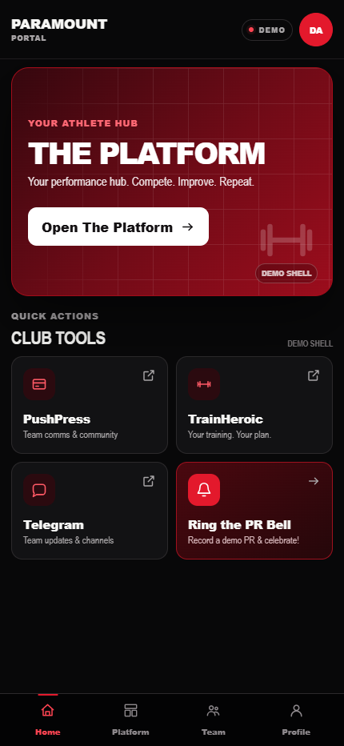
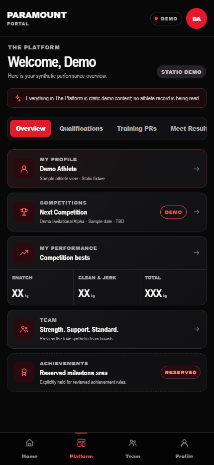
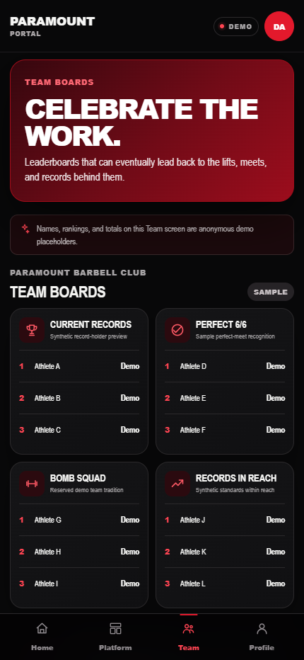
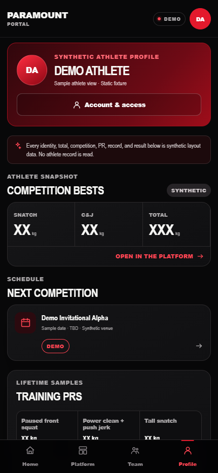
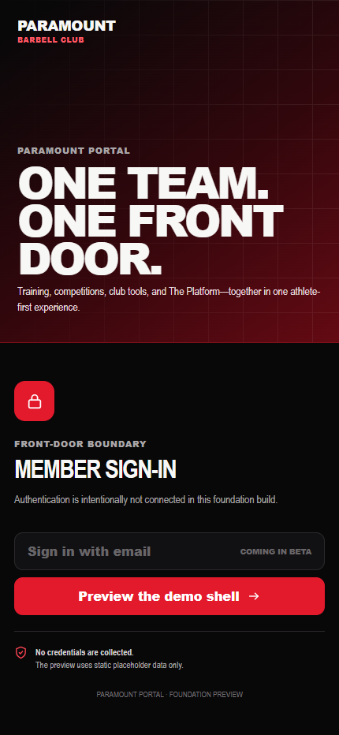
Records In Reach
Athletes see only verified Holds Record and athlete-facing In Reach results.
Coaches additionally see selected Near and cautious Needs Data / Review states.
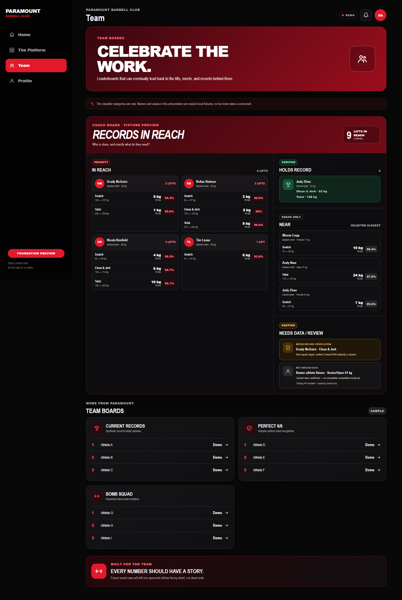
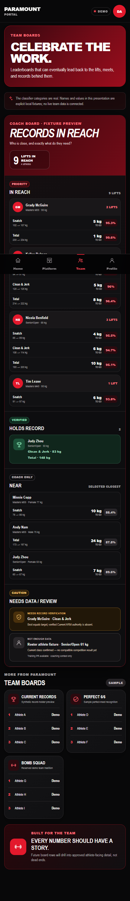
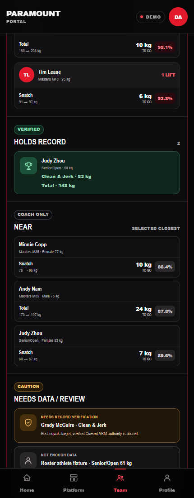
Athlete experience
The athlete view never exposes coach-only Near or unresolved review detail.
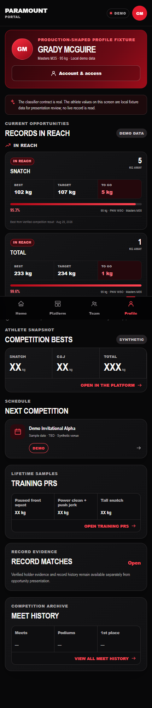
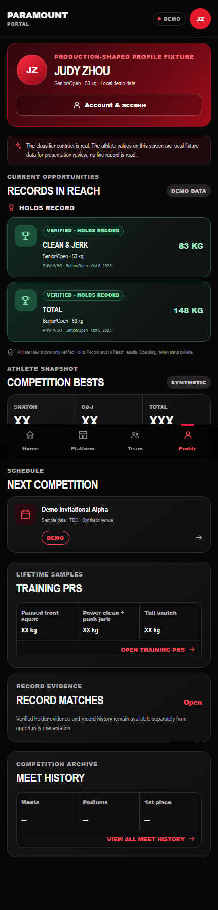
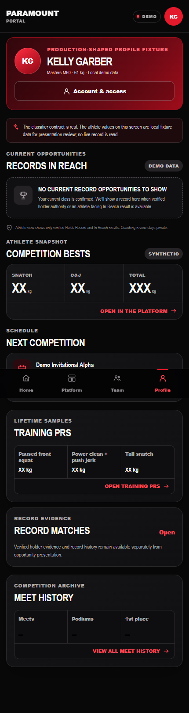
Review status
Responsive Portal foundation and Records In Reach presentation.
Displayed names and values are controlled review/demo fixtures.
Live Airtable/API data, authentication, writes, and production access.